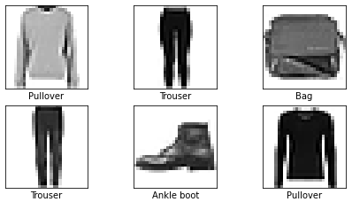
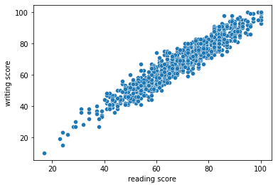
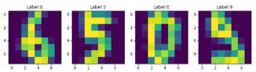

Python - Tensorflow - Keras - Numpy
The Fashion-MNIST dataset from the Tensorflow library, a set of images each associated with a label, is used.
A neural network is programmed as an image classification prediction model to predict the label associated with each clothing item.

Python - Pandas- Seaborn - Matplotlib
We have a dataset with student information, such as gender, education level, test preparation, and the results obtained in mathematics, reading and writing tests.
The correlation between reading and writing test results is analyzed using a linear regression model.

Python - Scikit learn - Seaborn - Numpy
The digits dataset from the sklearn library, which has images of the digits with their respective number, is used.
A logistic regression model is trained to correctly predict the number associated to each image.
SQL - MER - MR
Database for the traffic department to manage traffic infractions.
It collects information from the automobile companies about their brands and models of cars, as well as their owners.
When an infraction is committed, a fine is imposed on the offender, who may be a pedestrian or a vehicle owner.